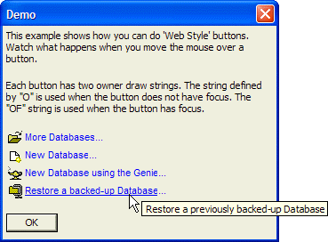

Web Style Buttons
This example shows how you can do "Web Style" buttons. Watch what happens when you move the mouse over a button. Each button has two owner draw strings. The string defined by O Directive is used when the button does not have focus. The OF Directive string is used when the button has focus. The O Directive does not have an underline attribute, while the OF Directive does have the underline attribute. Compare the two directives for a single button. This font specification is used when the button does not have focus: {F=Arial,8}.
O={J=L}{I:'$a5_open'}{c=Blue}{F=Arial,8} More Databases{F=arial,8}... |
This font specification is used when the button has focus: {F=Arial,8,u}.
OF={J=L}{I:'$a5_open'}{c=Blue}{F=Arial,8,u} More Databases{F=arial,8}... |
The full script follows.
dim h1 as C dim h2 as C dim h3 as C dim h4 as C h1 = "Open an existing Alpha Anywhere Database" h2 = "Create a new Alpha Anywhere Database" h3 = "Create a new Database using the Genie to create the database from a template" h4 = "Restore a previously backed-up Database" ui_dlg_box("Demo",<<%dlg% {wrap=60} This example shows how you can do 'Web Style' buttons. Watch what happens when you move the mouse over a button.; {lf}; Each button has two owner draw strings. The string defined by "O" is used when the button does not have focus. The "OF" string is used when the button has focus.; {lf}; <%B=N;T= h1;O={J=L}{I:'$a5_open'}{c=Blue}{F=Arial,8} More Databases{F=arial,8}...
;OF={J=L}{I:'$a5_open'}{c=Blue}{F=Arial,8,u} More Databases{F=arial,8}...
%!open_database>; <%B=N;T= h2;O={J=L}{I:'$a5_new'}{c=Blue}{F=Arial,8} New Database{F=arial,8}... ;OF={J=L}{I:'$a5_new'}{c=Blue}{F=Arial,8,u} New Database{F=arial,8}... %!new_database>; <%B=N;T= h3;O={J=L}{I:'$a5_genie_lamp'}{c=Blue}{F=Arial,8} New Database using the Genie{F=arial,8}... ;OF={J=L}{I:'$a5_genie_lamp'}{c=Blue}{F=Arial,8,u} New Database using the Genie{F=arial,8}... %!new_database_genie>; <%B=N;T= h4;O={J=L}{I:'a5_zip_small'}{c=Blue}{F=Arial,8} Restore a backed-up Database{F=arial,8}... ;OF={J=L}{I:'a5_zip_small'}{c=Blue}{F=Arial,8,u} Restore a backed-up Database{F=arial,8}... %!database_restore>; {lf}; <10OK>; %dlg%,<<%code% if a_dlg_button = "open_database" then ui_msg_box("Note","'open_database' was pressed.") else if a_dlg_button = "'new_database" then ui_msg_box("Note","'new_database' was pressed.") else if a_dlg_button = "new_database_genie" then ui_msg_box("Note","'new_database_genie' was pressed.") else if a_dlg_button = "database_restore" then ui_msg_box("Note","'database_restore' was pressed.") end if %code%) |

Next
See Also
Limitations
Desktop applications only